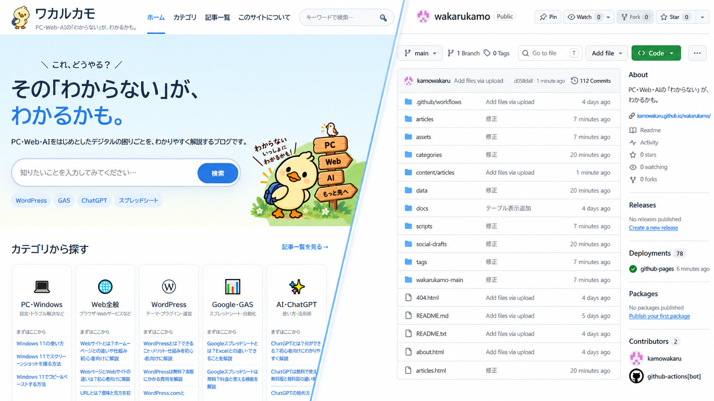

ChatGPTでブログを作ってみた⑨｜サイトマップを送信して検索登録を確認する
ブログのsitemap.xmlを作成してSearch Consoleへ送信し、URL検査やページのインデックス登録状況からGoogleに認識されているか確認する手順を紹介します。

結論
公開した記事をGoogleへ伝えるため、sitemap.xmlを作成してSearch Consoleへ送信します。
「送信しました」は受付完了を示す表示で、全記事がすぐ検索結果へ登録されたという意味ではありません。サイトマップの状態と各URLの登録状況を分けて確認します。
1. 公開URLの一覧を作る
サイトマップには、実際に公開されている正規URLを入れます。
- 下書き記事を含めない
- 404になるURLを含めない
- 古いslugや削除済みページを含めない
- 同じページを複数URLで重複させない
Markdownからサイトを生成している場合は、公開対象の記事データからサイトマップも自動生成すると更新漏れを減らせます。
2. sitemap.xmlを生成する
ChatGPTへサイトURLと記事データの形式を伝え、生成処理を追加してもらいます。
公開対象の記事一覧からsitemap.xmlを生成する処理を追加してください。
要件：
- トップページ、記事一覧、カテゴリ、公開済み記事を含める
- 下書きは除外する
- URLはhttps://から始まる絶対URLにする
- XMLとして正しい形式で出力する
- 同じURLを重複させない生成後にブラウザでsitemap.xmlを開き、URLが表示されるか確認します。
3. Search Consoleへ送信する
Search Consoleのサイトマップ画面で、対象プロパティのURLに続くsitemap.xmlを指定して送信します。
入力欄にすでにサイトURLが表示されている場合は、重複して完全URLを入れず、画面の形式に合わせます。
4. 「成功しました」になるまで待つ
送信直後は取得処理中になることがあります。エラーになった場合は、サイトマップURLをブラウザで直接開きます。
確認する内容は次の通りです。
- 404や403になっていない
- XMLではなくHTMLエラーページが返っていない
- URLが現在のサイトを指している
- XMLの記号やタグが壊れていない
5. 代表URLを検査する
URL検査で、トップページ、親記事、子記事を数件確認します。
重要なページが未登録なら、公開状態とcanonicalを確認したうえで登録をリクエストします。全URLへ短時間に何度もリクエストする必要はありません。
6. 登録数が少なくてもすぐ作り直さない
新しいサイトでは、クロールと登録に時間がかかることがあります。サイトマップが取得できていて、ページが公開され、内部リンクでたどれるなら、まず状態の変化を待ちます。
その間に確認するのは、記事内容、リンク切れ、重複ページ、noindexの有無です。
今回の完成チェック
- sitemap.xmlを公開URLで開けた
- 下書きや削除済みURLが入っていない
- Search Consoleへ送信できた
- 代表的なURLを検査した
- 送信完了とインデックス登録を区別できている
詳しい手順はこちら
sitemap.xmlとは？必要な理由と基本的な作り方を解説 Search Consoleへサイトマップを送信する方法｜追加後の見方も解説 Search Consoleでインデックス登録をリクエストする方法 「クロール済み・インデックス未登録」と表示されたときの対処法
次は、記事内容に合う広告やアフィリエイト導線を設置します。
ChatGPTでブログを作ってみた⑩｜広告・アフィリエイトを設置する
親記事
ChatGPTでブログを作ってみた｜企画から公開・収益化までの全手順

企業の情報システム・DX推進・マーケティング業務などを経験。PC・Webサービス・業務自動化など、実際に試して分かったことを初心者向けに解説しています。
運営者情報を見る →